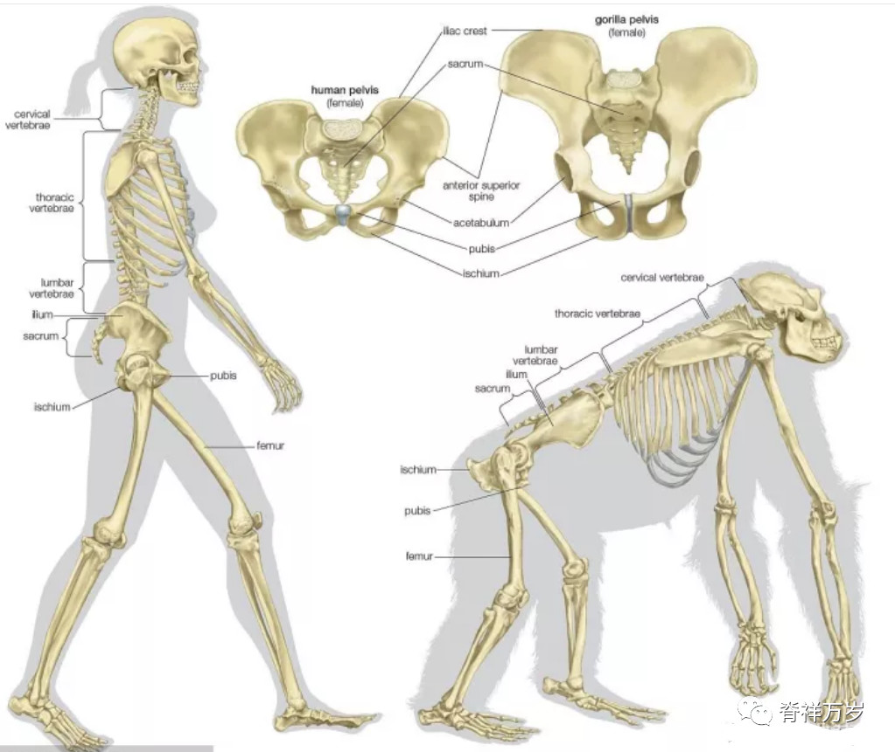
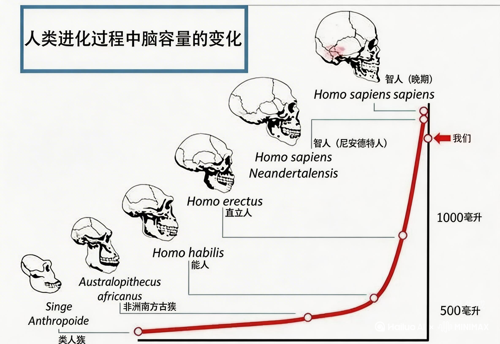
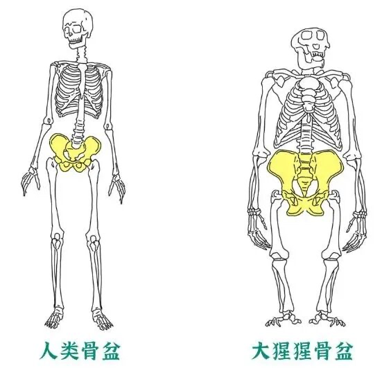
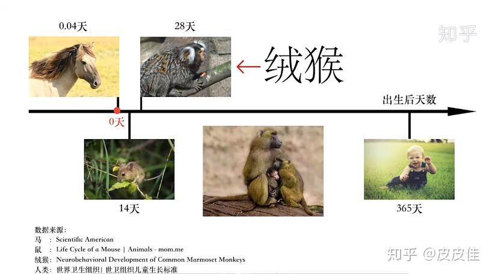
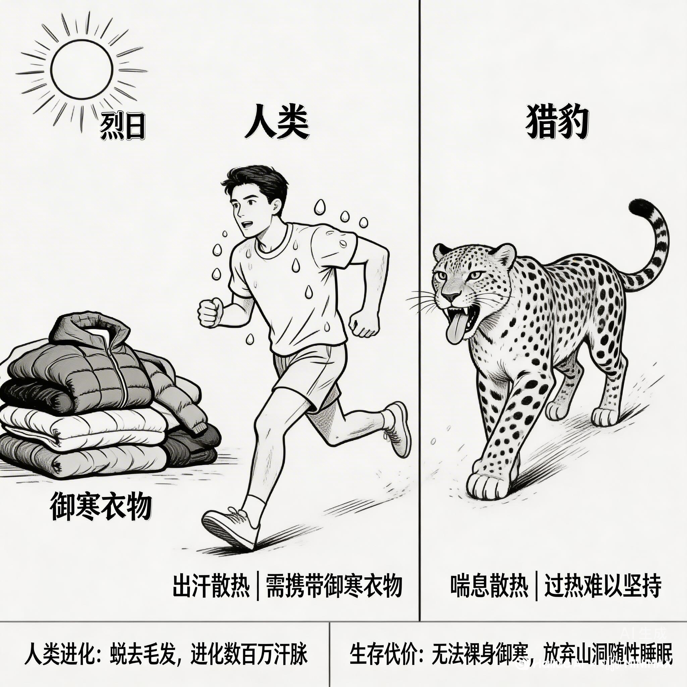
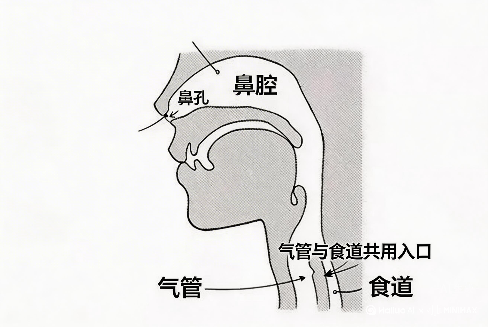
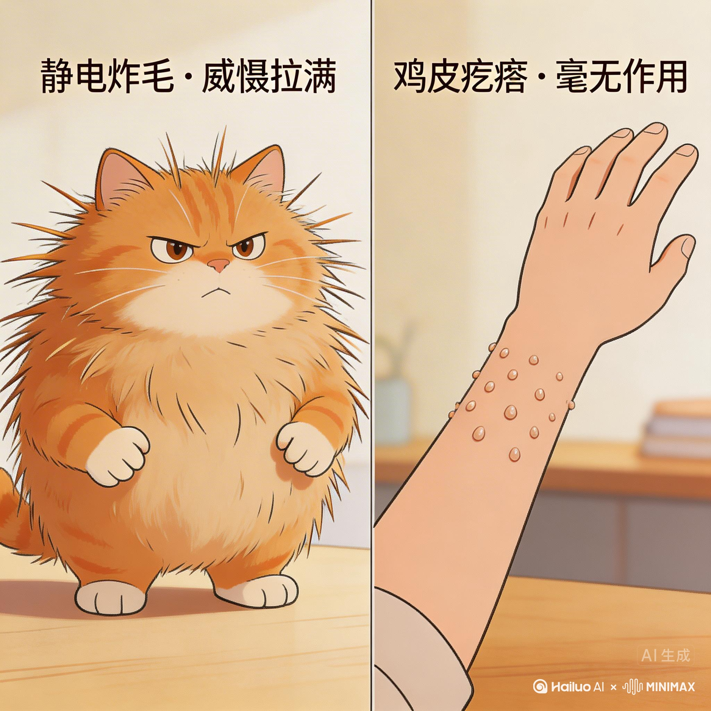

身体里的“离奇交换”
进化契约大赏 · 每一个 Bug 都是登顶的收据

脊椎：从“拱桥”到“电线杆”
为了站得高、腾出手，我们将受力均匀的“拱桥”强行竖起成“细竹竿”。 这种违章建筑让底部的腰5/骶1椎骨始终处于物理极限测试状态。
盆骨：硬件机房的“交付危机”
02直立要求盆骨变窄，而大脑（CPU）却在疯狂扩容。 为了解决“顶配大头出不去”的冲突，人类被迫接受“提前交付”。相比出生即奔跑的小鹿，人类幼崽全是需要长期售后服务的“肉团子”。




足弓：极速底盘的脆皮代价
放弃瞬间爆发，换取“顶级跑鞋底盘”。 由26块骨头组成的精密缓冲系统让我们成了动物界的长跑冠军，但也因结构过于精密，沦为极度脆弱、一崴就崩的“易损件”。
皮肤：自然界唯一的“液冷主机”

脱掉皮毛，进化出数百万汗腺，我们成了自然界唯一的全机身液冷主机。这种散热能力，让我们能在烈日下将猎物硬生生“跑死”。
📊 性能实证：人马马拉松
在威尔士人马大赛中，高温环境下，马会因为体温过高停下，而持续排汗的人类却能保持巅峰输出。
代价： 失去了天然防弹衣，沦为极致散热换来的脆皮体质。从此，人类必须依靠外挂装备才能存活。

咽喉：为了说话签下生死状
喉头下沉腾出共鸣腔，开启高级社交。代价是呼吸道与食道共用一个“无红绿灯十字路口”。人类成了少数会因“边吃边聊”而窒息死亡的动物。
眼睛：传感器的“草台班子”
06追求超高清细节，却把血管和神经布在感光元件前面。 视网膜像没刷胶水的壁纸，极易脱落。这是一套在压力下“赶工”出来的倒装系统。

立毛肌：无法删除的冗余代码

当人类进化出语言与工具，原本用来恫吓敌人的“炸毛威慑”彻底失效。
现在的鸡皮疙瘩，除了暴露你的恐惧与寒冷，已毫无实战价值。它像一段被遗忘在系统底层的“死代码”——删不掉，也运行不了，只是静静地占据着我们的基因空间。